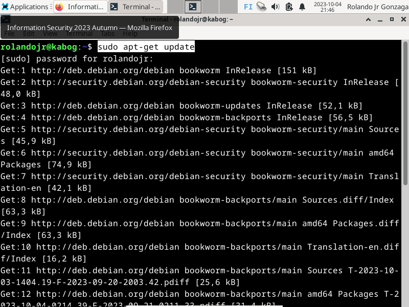
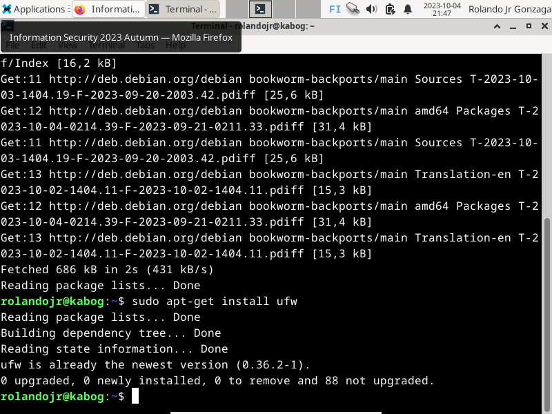
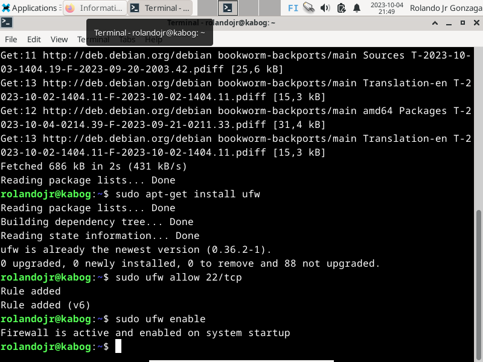

Steps in Firewall Installation
Update the system's package list. sudo apt-get update

Install the Uncomplicated Firewall (UFW). sudo apt-get install ufw

Allow incoming TCP connections on port 22 then Enable UFW. sudo ufw allow 22/tcp sudo ufw enable
